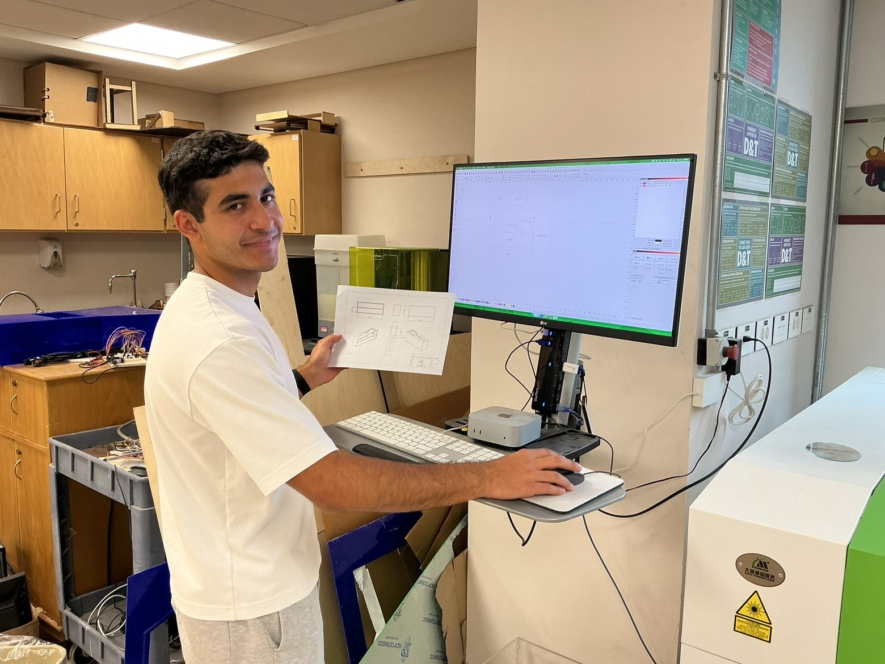
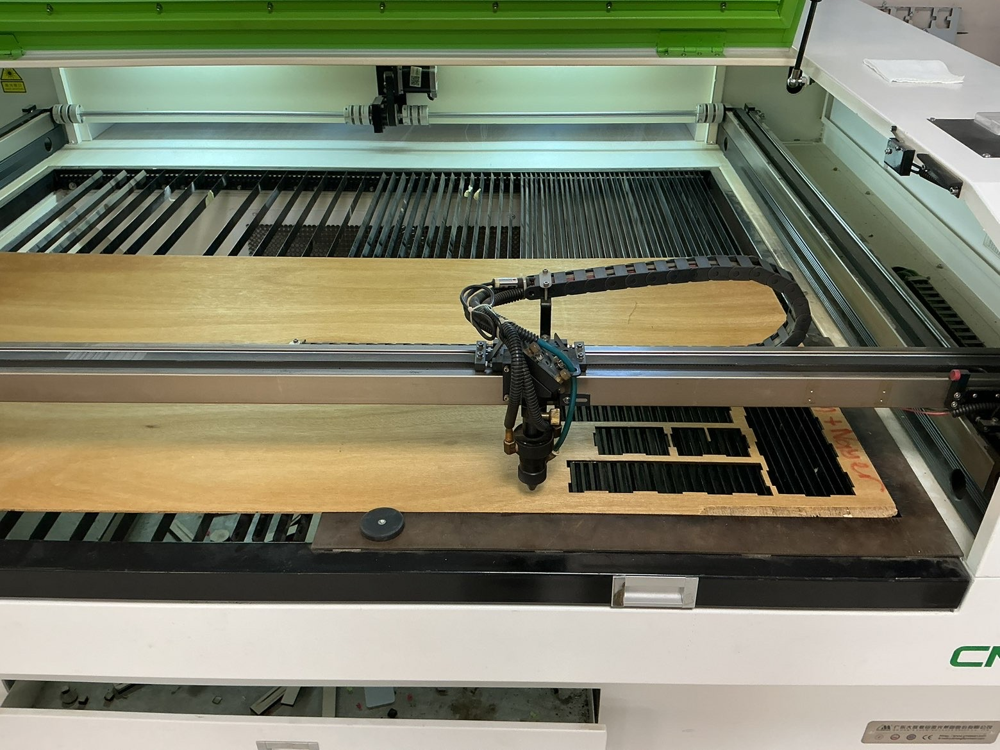

This project started in my Design & Engineering class, where my classmate Zein Hussein and I were asked to find and solve a real problem at our school. We talked to teachers and found a recurring complaint: whiteboard markers and erasers kept going missing or ending up scattered, making it harder to keep classrooms organized.
Zein and I researched existing solutions, then went through several rounds of prototyping and CAD modeling in Shapr3d before landing on a compact magnetic organizer that mounts directly onto a whiteboard. We laser-cut the final design out of plywood, hand-assembled it with super glue, and used neodymium magnets to give it a secure, no-hardware attachment to any whiteboard surface.
The organizer is now actually in use — six units are mounted in teachers' classrooms at school, holding markers and a microfiber cloth exactly where they're needed.